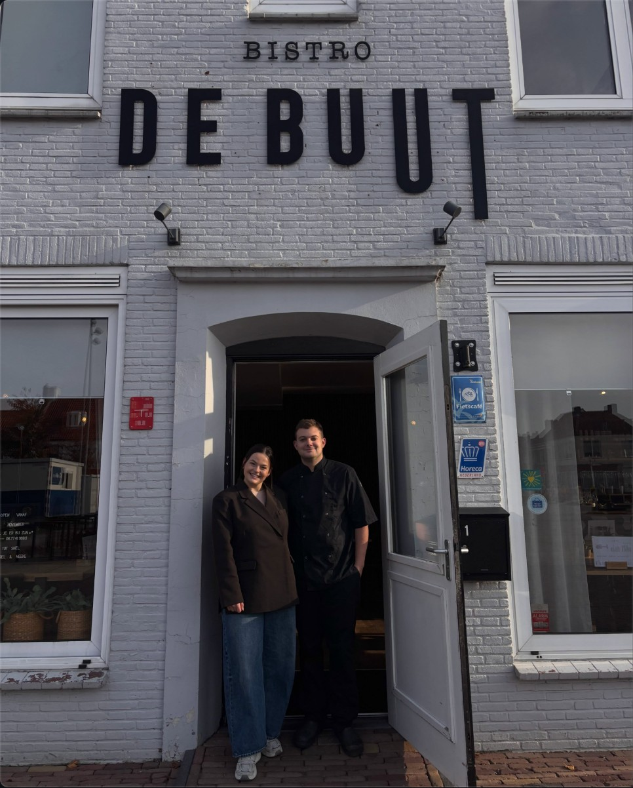

Lunch
12-uurtjes, tosti’s, broodjes carpaccio, zalm of burrata en een uitsmijter.
Bistro DeBuut opende op 6 november de deuren in Schoondijke. Kom voor een 12-uurtje, tapas bij een drankje, een ribeye of zeebaars, en sluit af met verse appeltaart of een Zeeuwse koffie.

De kaart is breed: broodjes en soepen voor de lunch, tapas om te delen, salades, voor- en hoofdgerechten, desserts en een tearoom. Daarbij een flinke kaart met bier, wijn, aperitieven, gin-tonics en cocktails.
Seizoensgroente, friet
Tartaarsaus, salade, friet
Chimichurri, gewokte groente, friet
Stoofvlees, salade, friet
8 stuks, kerriemayo
Slagroom
Prijzen en gerechten zoals op hun menukaart van 7 november; ze kunnen wijzigen. Bij allergieën graag even navragen.
12-uurtjes, tosti’s, broodjes carpaccio, zalm of burrata en een uitsmijter.
Bitterballen, calamaris, garnalen tempura en een tapasplank om te delen.
Van hamburger en stoverij tot ribeye, zeebaars en sliptongetjes.
Appeltaart, poffertjes, speciale koffies, wijn, bier en cocktails.
Met een QR-code op tafel, de bar of de deur bekijken gasten de actuele kaart direct op hun telefoon, zonder app. Verandert het menu of een prijs? Dan passen wij de digitale kaart aan en hoeft er niets opnieuw gedrukt te worden.
Bel of app naar 06 27 41 98 69, of stuur een reserveringsaanvraag via de website.